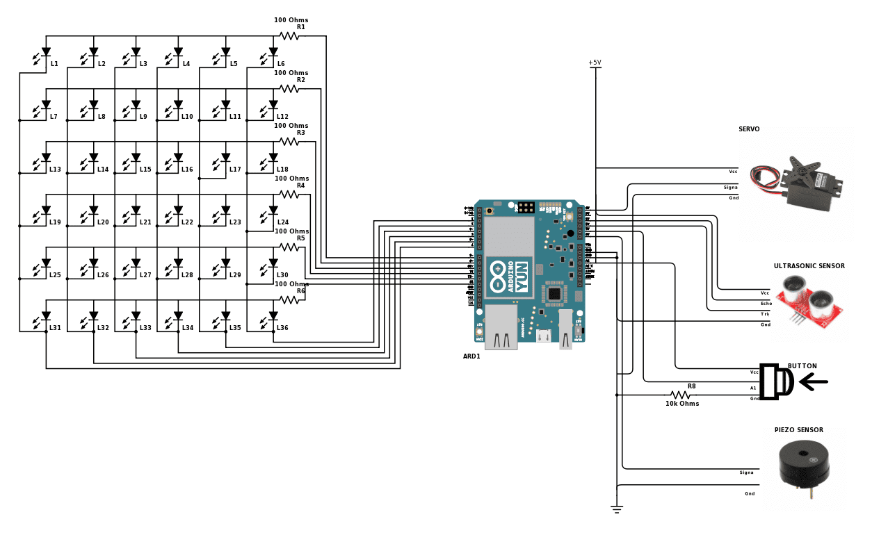
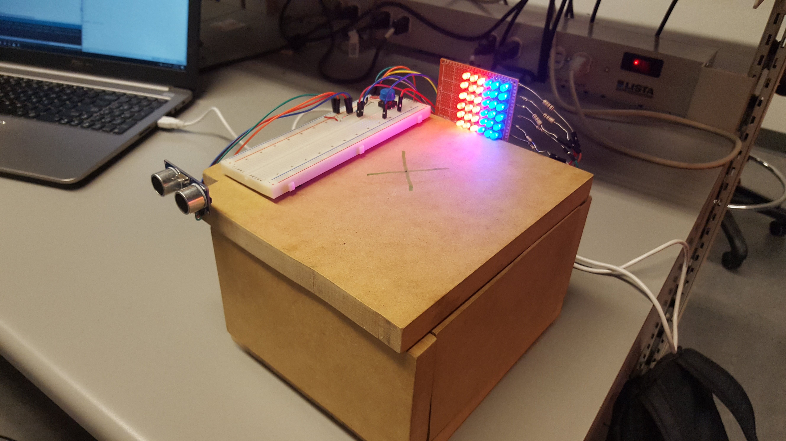

I built, soldered, coded, and tested a digital safe that can be unlocked with a secret knock sequence.
Tools: Arduino
Keywords: Ultrasonic sensor, piezoelectric sensor, LED matrix
See the full source code here →I built this project with a partner as the cumulative project for my Digital Systems course. The theme for our class was "Security". As a basic requirement, we had to include timers, interrupts, and hardware/sensors.
We used Arduino for this project and we created our own custom Timer code to use for interrupts and timing.
Piezoelectric sensor: We used this sensor to identify knocks by way of vibration. We taped the piezo element to the underside of the knocking surface. We calibrated the sensor before each use by reading the output from knocking and setting a "knocking threshold voltage".
Ultrasonic sensors: We used the ultrasonic sensor to determine when a person was in front of the safe. It determined distance by taking half of the speed of sound from an identified object. If the user stepped away from the safe at any time, it would shut off.
We used an LED Matrix to indicate success or failure of a knock attempt. If the user entered the incorrect knock sequence, the safe flashed red and locked for 5 seconds before another attempt was allowed. If the user entered the correct knock sequence, the LEDs flashed blue and the safe opened.
To determine if the knock sequence was correct, we created an array that measured the times between the 5 most recent knocks. If, within a margin of error, the times matched the array that we set to be the "correct sequence", the safe unlocked. Otherwise, the safe locked for 5 seconds before allowing another knocking attempt.